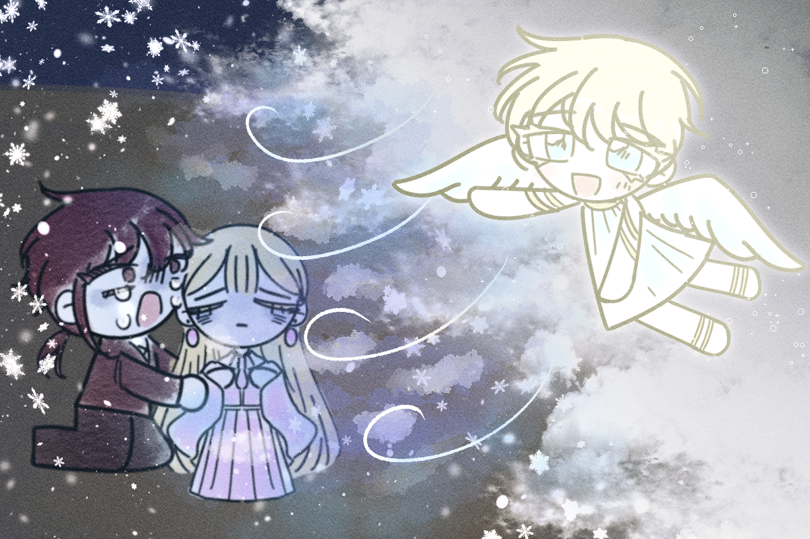
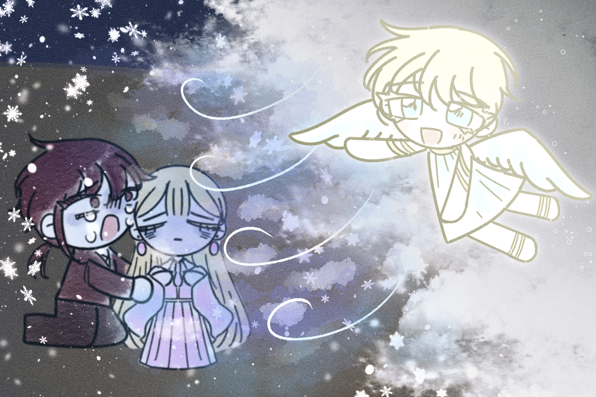

하지만 부러움은 시기와 질투를 낳습니다.
그녀를 데려가기 위해 천사들이 일으킨 바람이 애너벨을 찾아왔고,
그녀를 싸늘하게 얼려버렸습니다.
애너벨은 어떤 말 한마디도 하지 못한 체 그렇게 쓰러졌습니다.
그녀가 마지막으로 하고 싶었던 말은 무엇이었을까요?
그 순간에도 그녀는 저를 생각했을까요?
그날 나의 행복도 함께 얼어붙었습니다.
그러나 천사들이 애너벨을 얼리고, 또 영혼을 가져갔을지라도,
그 영혼을 저 깊은 바닷속 악마들이 칠흑과 같은 어둠 속에 가두었을지라도,
그 무엇도 우리 사이의 사랑을 빼앗아 갈 수는 없습니다.
그만큼 우리는 서로 아꼈고, 사랑했으니까요.
하지만 그때 저는 무엇하나도 할 수 없었습니다.
저는 길을 잃은 체, 그저 울고 있었습니다.
 
